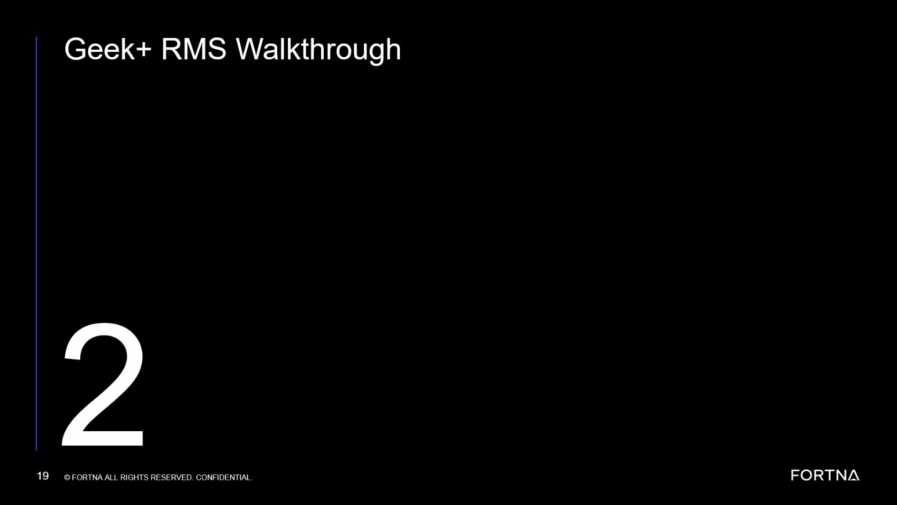
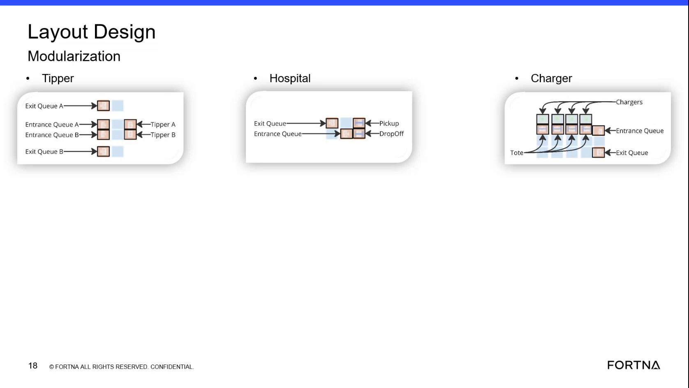

| Procedure ID | proc_use_hospital_as_reject_station_for_unsorted_totes_and_packages_v1 |
|---|---|
| Title | Use the Hospital as the Reject Station for Unsorted Totes and Packages |
| Procedure Type | reference |
| Primary Role | operator |
| Support Safe | Yes |
| Validation Status | needs_sme_review |
| Merge Status | source_finalized |
This source-backed reference explains that the hospital is used as a reject station for operator handling when a tote or package did not get sorted normally. The operator addresses those totes at the hospital so the packages can get back onto the system, but the training source does not provide detailed recovery or data-entry steps.
Use this reference when a tote or package is identified as having gone to the hospital instead of completing normal sort flow, and the operator needs to understand the documented purpose of the hospital handling point.
Responsible role: operator
Instruction:
Identify that the tote or package has gone to the hospital instead of being sorted normally.
Expected result:
The operator recognizes that the affected tote or package is in hospital handling flow.
Screens / Images:

Stop or Escalate If:
Responsible role: operator
Instruction:
Recognize from the source that the hospital is a reject station for operator handling, not a normal sort destination.
Expected result:
The operator understands the intended function of the hospital location.
Screens / Images:
Stop or Escalate If:
Responsible role: operator
Instruction:
Take the tote to the hospital handling point or address it at the hospital location as described in the source.
Expected result:
The tote is positioned or handled at the hospital location for operator attention.
Screens / Images:

Stop or Escalate If:
Responsible role: operator
Instruction:
Address the tote there so that the packages can get back onto the system, using only the source-backed understanding that the operator handles those totes at the hospital.
Expected result:
The tote has been addressed at the hospital in line with the source-described purpose.
Screens / Images:
Stop or Escalate If:
Responsible role: operator
Instruction:
Record or communicate that the package was handled through the hospital if local practice requires it; the source does not provide detailed entry steps.
Expected result:
Any required local communication or recordkeeping is completed without adding unsupported process detail.
Stop or Escalate If: